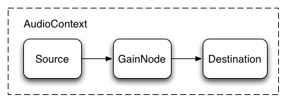

A Javascript API to generate and modify sound
and output through your browser.
Source: http://caniuse.com/audio-api
Everything you do to load, manipulate and play sounds will be done through the AudioContext.
try {
window.AudioContext = window.AudioContext||window.webkitAudioContext;
context = new AudioContext();
}
catch(e) {
// IE :(
console.log('Web Audio API is not supported in this browser.');
}
It can be a sound file, the microphone,
or you can generate a sound wave using the API
examples
var osc = context.createOscillator();
osc.start(0);
osc.stop(1); // play for one second
var osc = context.createOscillator();
osc.frequency.value = 261.6 // middle C
Volume is controlled by a GainNode.
some examples
var gain = context.createGain();
gain.gain.value = 0.5; // 50% volume
// ramp up to full volume over two seconds
gain.gain.linearRampToValueAtTime(1, 2)

Source: Getting Started with the Web Audio API
osc.connect(gain);
gain.connect(context.destination);
http://github.com/daphnechong/music-matrix-tutorial
{kind=link}